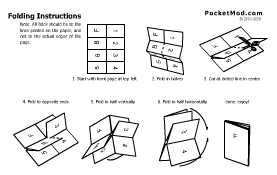
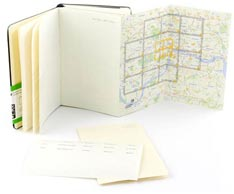
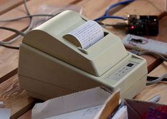

Back in 02007, I sat in a conference room in Paris listening to someone I’ve never heard of espouse the usefulness of paper. Conference sessions tend to blur together for me, this could have something to do with the late nights, the mix of interesting and uninteresting sessions as well as the boring to the sublime, but this presentation stuck with me. It was at XTECH which I first saw Aaron Straup Cope talk about his newest farce, the PaperNet. The idea was simple and brilliant at the same time, I was hooked.
His concept of the PaperNet struck such a cord with me, I have attempted many of my own PaperNet browser creations – some bearing more fruit than others. I have even given a few presentations about my adaptation of Aaron’s original idea. Everyone seems to look at it and say “Yes, that is exactly what we need” – then strangely no one ever calls me back. Still more evangelism to do.
Evolution of Paper
Before we get to the describing what and how the PaperNet works, it is interesting to look at the history of paper to understand why we are so intrinsically connected to this technology.
Before the advent of a writing medium, all transactions, histories, contracts and traditions where experiential and oral. Because of this, there was the possibility of drifts in the data. Surprisingly, that drift was very minimal in the oral tradition. Classic works such as the Illiad and Beowulf didn’t deviate greatly from the originals. Even the transmission of fables and fairy-tales across cultures remained mostly intact. A story we consider traditionally European appears in similar fashions in Indian, Middle-Eastern and Asian history.
There needed to be away to record information with greater accuracy. Paper wasn’t the first, and probably isn’t the best, format for recording writing, but what we are using today in various thicknesses, weights, colours and sizes hasn’t changed its function for thousands of years.
Some of the first recorded writing was carvings into the surface of wood and bone to mark-off payments, land boundaries and various other tasks. These mediums were large, bulky and not very portable. The Sumerians were some of the earliest people to use clay tablets to mark payments – a slightly more producible medium. This was a shift in daily life because it allowed for a ledger to record transactions and build-up credit. You no longer had to barter with only what you had on hand.
Tally sticks were popular another popular medium before the clay tablets and have managed to out last them all the way to present day. A tally stick is a long stick that can be notched to represent a payment. The stick would then be split into two pieces through the notches and both parties in the transaction took a half. This prevented either from trying to cheat the other. It is a clever innovation, but requires vast storage of half tally sticks to recollect funds or as proof of payment. The advantages of tally sticks are that they are cheap, the vast illiterate of the time could use them and they could be used as both payment for goods and for tax records. They were the precursor to modern day paper money.
The next evolution of paper occurred around 3500 BCE in Egypt when papyrus was invented. It was much more portable than the previous wood, bone and clay tablets and used ink rather than carvings to record the values. Papyrus was the precursor to our modern paper. The Mediterranean and Egyptian regions were ideal growing conditions for the papyrus plant, so it was a natural conclusion to use it for scrolls. Papyrus use lasted until around 800 CE, when other, more abundant mediums simply replaced it.
Around 1200 BCE, the Chinese started to use silk as their writing medium. Silk has many advantages over papyrus and modern paper, price is not one. So it never became a main stay of the publishing world.
Strangely enough, it was around 600 BCE that the Chinese began to use some sort of toilet paper. It makes you wonder what they did for several hundred years between the creation of paper until someone put a roll of it in the toilet?
Parchment and Vellum were the next paper contenders and they see an uptake around 300 BCE due to the massive consumption of papyrus by the Library of Alexandria. The library was consuming so much papyrus in its attempt to gather complete world knowledge that others were unable to get any, so they turned to alternatives. During this time, parchment and vellum usage increase and stayed in use for several hundred more years.
It wasn’t until around 01120 CE that the first paper-mill was built in Europe. It was built in Spain by the Moops which had already been using paper for many years before throughout the Middle-East and Asia.
It took around another 350 years before Gutenberg built the first working printing press and changed the world again. From the hand-writing of bibles to the mass-production of papal indulgences, the invention of the printing press revolutionized the way we distribute knowledge and information.
For the 900 years since paper first arrived in Europe, the paper we use today hasn’t changed all that much. That means for most of a millennium we have been with paper, used paper and worked with paper’s strengths and weaknesses. We have a pretty good understanding of paper, so why not attempt to take it one step further and connect it with the next publishing epoch, Internet.
As great as the printing press was to publishing, Internet is seeing a similar explosion. The barrier to transferring information is asymptotically dropping to zero. Wouldn’t it be wonderful if it was possible to connect the dead-tree world of paper to the digital world of the Internet? This is what the PaperNet is attempting. It is not some sort of eBook reader, or expensive digital paper, it is the low-cost, low-barrier to entry, paper and ink we use everyday, just printed on-demand for specific purposes.
Limitations of Paper vs. a Computer
For a presentation to convince others of the joys of paper, I created this chart. I will admit it is weighted for paper to win. I do love my computer, but at times, the things that are important, a computer can’t handle.
| Paper | Computer | |
|---|---|---|
| Water proof | Yes | No |
| Electrically Independent | Yes | No |
| Portable | Yes | No |
| Foldable & Tearable | Yes | No |
| Sit on it/Drop It | Yes | No |
| Annotatable | Yes | No |
| Cheap | Yes | No |
| Replicable | Yes* | Yes |
| Transmittable | Yes* | Yes |
| Resolution | 5760 dpi | 72 dpi |
| File format agnostic | Yes | No |
We are comfortable with paper, we know the limitations and I want to explore these points a bit more in depth to help demonstrate the everyday things about paper we take for granted.
Water Proof
Very few computers are water proof. I will admit that there are a few very high-end and specialized machines which are design to work in extreme conditions, but the vast majority of computers will fail completely if they are drenched it water – even small amounts can render them useless. Paper on the other hand, is much more water resilient. Much like computers, there are specialized notebooks and pencils for writing in monsoon conditions, but these are only a small portion of the paper we have access to. The newspapers we get in our letter box are poor quality, low weight paper, yet they handle conditions of damp, rainy days without completely failing. Water by no means renders paper useless.
Electrically Independent
Desktop computers are tethered to the wall outlet, they are sipping their power through a straw and can never get very far. Laptops and phones are more free to roam thanks to a battery, but at the end of the day the battery runs low and they need a trip back to the power oasis for a refill. On the flip-side, paper does not require power. No need to charge or stay connected.
Portable
Much in the way early writing tablets were not very portable, so too is the fate of desktops computers. With the exception of the LAN party, desktop machines are rarely transported very far. The same went for the wood, bone and clay tablets, even the tally sticks became a hassle to move and organize. While computers are getting smaller and more pocket-size their “useful” screen real-estate is shrinking as well. Paper is much more portable in terms of weight, size and restrictions than electronic devices.
Foldable & Tearable
With paper you tend to fold-over and dog-ear pages in a book. You’d never try that with your laptop screen! I had always been told that some early American paper money could be torn into divisions and would represent that percentage. So if you had a one dollar bill and tore it in half, you had two 50 cent bills. I can’t confirm this is true, but old coinage used to be split into twelve pieces so it could easily be divided into thirds or quarters and payment to be made in the left-over bits. We have an intrinsic understanding of taking a whole something and partitioning it down. Computers really can’t be any more divisible.
Sit on it/Drop it
Paper can take quite a beating without failing. We fold-up paper and stick it under the wobbly legs of tables, but later we can unfold that paper and use it. Paper is very malleable, we sit on it, stack it, drop it, none of these things can be done with a computer without worrying that it will break.
Annotatable
With paper it is very easy to draw circles, make notes in the margin, highlight text and generally annotate the medium. Computers are getting better at this, but it requires special software, or is restricted by the DPI, interfaces and input devices. Writing with a mouse is near impossible. Newer touch screens are allowing us to easily circle and mark-up the screen, but this is still a far cry from the possibilities on paper.
Cheap
The price of a ream of paper compared to a computer is a huge difference. The low cost of paper makes it disposable (or easily recyclable). Computers are so expensive compare to paper, that their usage and possibilities are restricted. You might just throw a few books in your bag for a trip, but electronics devices are always a worry, from breakage to theft.
Replicable
This is once area where computers are designed to excel. Since all computer data is represented as ones and zeros, it is very easy to make more exact copies. But paper isn’t completely left behind! Photocopiers make it easy to make replications of an original document.
Transmittable
Again, the Internet makes transferring files across the globe as simple as typing an email address. The ability to space-shift data is another important feature of a computer.
We tend to forget, that paper has this ability with a little help from a fax machine. When we stick a piece of paper into a fax machine in New York and somewhere in London your document appears out the other side, you have effectively created a matter transporter. It is possible to transmit a physical paper document anywhere in the world.
Resolution
Computer and device screens are somewhere between 72pdi and 120dpi. The highest resolution printer after a quick Internet search was 5720dpi. The amount of data per square unit on paper is at least a factor of ten greater than on a screen. This is important for information density and readability.
File Format Agnostic
Finally, paperNet 1.0 is fully compatible with paperNet 2.0 the same can’t be said for computer software. Different versions, different vendors, physical storage devices and different operating systems all complicate data interchange. Things are getting better, but there is still legacy data which will and is lost forever due to proprietary formats that can no longer be read by any modern day machine. The paperNet used over 4000 years ago is in existence and running successfully today.
Hopefully, I have convinced you on some small level that paper is better suited for specific tasks, but the whole point of the paperNet is to demonstrate what it means for paper to be infused with the Internet.
So what is the PaperNet?
A good start to designing a paperNet browser is a product called PocketMod. It is a service, but more importantly it demonstrates a simple way of cutting and folding a standard piece of paper into an 8 page booklet. This is important because it allows you to quickly create dynamic, print-on-demand notebooks on any standard printer. By minimizing the requirements and means of production, it is possible for the masses to take part. You too can have your own paperNet browser!
PocketMods are great, but they are based mostly around the idea that you have 8 pages that can be populated by a series of templated designs. Maybe on page 1 you want an intro page, on page two you want a grid, but on pages 3 and 4 you want ruled lines. The possibly list of designs is quite long and you can mix and match between them, but it is still finite and not very dynamic content.
While mini-notebooks are great, the paperNet can exist in more forms than just this.
Another early paperNet prototype product is the Moleskine City Guides. These are standard-sized moleskine notebooks, but they contain a few additional pages which are specific about a city. New York for instance, has maps of Manhattan, a list of museums, average rain fall and other long-term facts. Not to be out-done, Phaidon created Wallpaper* City Guides. In much the same manner as Moleskine, it lists basic travel information about the city, but is otherwise very static – maybe it is part of their Planned Obsolescence?
What both of these products suffer from is change. To print these books, the designers needed to have everything finalized months in advance, then the print run occurs, then packaging, then shipping where it awaits for someone to purchase it. This means that the information in the City Guides are probably 6 months to a year out of date! This precludes the ability to put in hot new restaurants or attractions, stuff that is actually useful for a traveller.
The paperNet is designed to circumvent just these issues, its print-on-demand and annotatability make it ideal for up-to-date information. These disposable travel guides can contain types of information unthinkable for “professionally” printed books. The idea behind the paperNet is to connect paper to the world of the Internet, therefore rapidly changing data can be used and printed onto the paper, data such as; exchange rates, 5-day forecasts, social networking information from your peers. You could argue that the paperNet has an even higher level of planned obsolescence than other travel guides. I would say that’s OK, because you never expected or needed a sheet of paper to last longer than the trip itself – so why fool yourself into paying $10 or more for an outdated travel guide you’ll probably never use again?
 Just as PocketMods are one way to represent the Internet on paper, Tom Taylor went and created the MicroPrinter. This is an old thermal receipt printer, the kind you see everywhere and can pick-up on eBay for next to nothing. Through a bit of hardware hacking, he hooked-up a stream of data to be printed automatically every morning. Imagine, getting out of bed, going to brush your teeth and having a short receipt print-out of your meetings for the day, a list of friends who will be in town, any upcoming birthdays, a todo list, a traffic update as well as the weather report. This is a simple “one-pager” of your next steps and immediate information. The print-out requires no power, can be folded-up and put into your pocket, read on the bus or train without having to worry about someone thieving your expensive laptop or phone, and you can easily cross-off tasks when they are finished. MicroPrinters are the personfication of a Personal Assitant. Your PDA is a cold device that is always beeping at you, whereas the MicroPrinter is the friendly assistant who leaves notes on your desk for you to deal with when you have the time.
Ultimately, the paperNet isn’t just about todo lists and travel guides. It is about using paper in many of the same ways we use the Internet, and using Internet data to populate the paper. As an experiment, my friend Mike Stenhouse and I discussed the possibility of a paperNet Wiki. He was helping plan BarCamp London 6 so I suggested that would be a great time try a beta wiki on paper. As an experiment, we wanted to see if it was possible to build a self-organizing bottom-up collaborative space on paper. We even thought about setting-up a digital camera to make a photo of the wall every 5 minutes. That way the paperNet Wiki was versioned and it could be possible to “roll back” any changes.
Mike did manage to build the paperWiki-it didn’t turn out exactly as planned, but it was a learning experience none the less. Ideally, people would have used their hyper-local and local knowledge of London to suggest places to eat, drink, sleep and visit. For those who agreed or wanted to contribute their own thoughts, they could simply extend the paperWiki with a new page, or annotate an existing one. We hoped to build-up a vast knowledge of the surrounding area which could then be fed back into digital form, mixed, mashed-up and repurposed back to the paperNet in other ways. What ended-up happening is that it diverged into Twitter and Flickr clones, but there was still information sharing, just not exactly in the way we intended. So back to the drawing board to make some tweaks for the next iteration.
PaperNet Folding@home
We are attempting to stay connected and updated all the time. It is only natural to want to be able to reflect the recent information on paper, this is how we use laptops and mobile phones. Traditionally books were planned, proofed and printed over long durations. The paperNet merges the two and cuts down the creation time and generates unique data just for your needs. Later we’ll explore more software, services and ways to easily automate and build your own paperNet.
What’s in your paperNet browser?